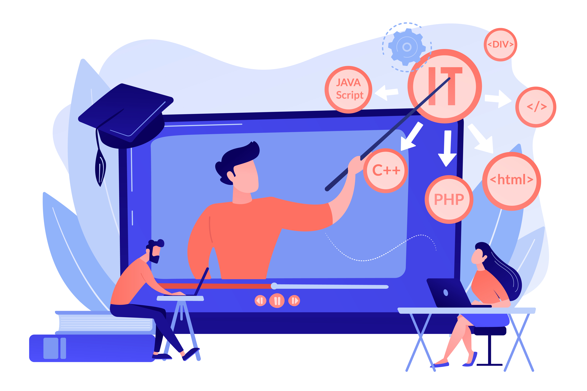
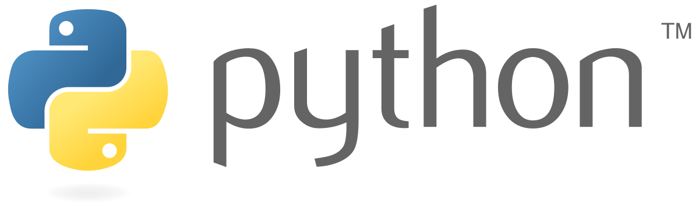

ArticleApp
Offline article, language detail and local favourites, using the original bundled artwork.
Article

10 Bahasa Pemrograman Terpopuler di tahun 2020
Bahasa pemrograman adalah kumpulan sintaks yang berfungsi untuk memerintahkan perangkat lunak pada komputer. Perkembangan teknologi pada saat ini mendorong banyak orang untuk mempelajari berbagai jenis bahasa pemrograman.
Pada Artikel kali ini, saya akan membahas 10 Bahasa Pemrograman terpopuler di tahun 2020 menurut PYPL Popularity of Programming Language:

Python is widely regarded as a programming language that’s easy to learn…
Language detail
1. Python
Python is widely regarded as a programming language that’s easy to learn, due to its simple syntax, a large library of standards and toolkits, and integration with other popular programming languages such as C and C++.
Favourites · illustrative saved state
Python is widely regarded as a programming language that’s easy to learn, due to its simple syntax…